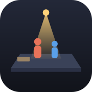

図の画像
画像を長押し／右クリックで保存できます。

ドラマチックシミュレーター間口＝舞台の横幅（額縁の内側）、奥行＝舞台のツラから奥まで、高さ＝額縁の高さ、舞台の高さ＝客席の床から舞台面まで（3Dで使います）。
リンクを送ると、相手はアカウントなしで、スマホでもPCでも全シーンを見られます（見るだけ。相手が触っても、こちらの内容は変わりません）。図面の画像はリンクには入りません。
画像を長押し／右クリックで保存できます。
図面を開くと、縮尺・寸法・舞台の位置を自動で探して反映します。見つからなかったところだけ下の手順で合わせてください。